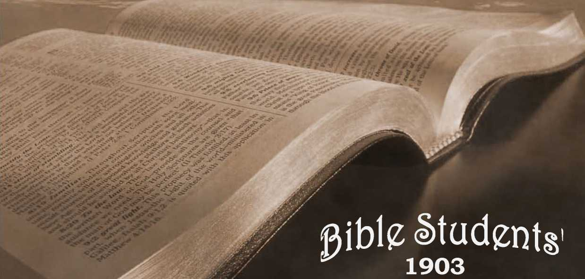

No. 63—Christ’s Death Secured One Probation or T rial for Life Everlasting to Every Man
OLD
CHRIST’S DEATH
One Probation or Trial for Life Everlasting to Every Man
A SEQUEL TO THE
EATON-RUSSELL DEBATES
REPRINTED FROM THE PITTSBURGH GAZETTE
DECEMBER 7, 1903
' A‘J. 63.—-j!>ECEMBER,. xgo^.
AS SECOND CLASS MAH. MATTER Al THB POSTOFFICE, AIXKGHBNY, »A, SAMPLE TRACTS FKEZ 1 SUBSCRIPTION PRICK, SIX CENTS (3d.) PER YBAR—48 PAGES
OLD THEOLOGY QUAINTLY
— FO& THE —.
PROMOTION OF CHRISTIAN KNOWLEDGE.
PUBLISHED BY THE
BIBLE HOUSE, ALLEGHENY, PA., U.S.A.
BRITISH BRANCH, 24 EVERSHOLT ST,, LONDON, N. W.
NO. 15. REPLY TO INGERSOLL, NO. 21. DO YOU KNOW?
NO. 37. HOW RBADEST THOU T
NO. 38. HOPE OF IMMORTALITY.
NO. 40. WHAT IS THE SOUL ?
NO. 41. MUST WE ABANDON HOPE OF A GOLDEN AGE ?
NO. 42. CROSSES TRUE AND FALSE.
NO. 44. GATHERING THP. LORD’S JEWELS.
NO. 49. WHICH IS THE ' .’RUE GOSPEL ?
NO. 52. OUR LORD’S RBI URN. '
NO. 53. THE WAGES OF SIN.
NO. 54. A DARK CLOUD AND ITS SILVER LINING. ‘
NO. 57. CALAMITIES—WHY GOD PERMITS THEM.
NO. 58. PURGATORY.
K». 59. THE WORLD’S HOPE.
NO. 60. BRINGING BACK THE KING.
NO. 6l. PROTEST A NTS AWAKE !
NO. 62. WHY EVIL WAS PERMITTED.
Nos. 2x, 40, 53 and 60 can be had in Swedish. , .
Nos. 21, 53 and 54 can be had in Dano-Norwegian.
Nos. 21, 38, 40, 49, 53, 59 and 60, 61,62 can be had in German.
Nos. 21 and 59 can be had in French.
Extra copies of the above tracts will be supplied free, on application, to subscribers; or a single sample to any one. Thus many may be coworkers with us and with Godin scattering the truth—“the hail.”—Isa. 28 : 17. Hundreds of thousands are being circulated thus, the funds being supplied by voluntary contributions from those whose hearts and heads have been refreshed by these “glad tidings of great joy which shall be unto all people.”
LBOOKZIZB/TS
THE WONDERFUL STORY, “THE OLD, OLD STORY.” Illustrated.—60 pp. what say the scriptures about hell?—88 pages. Also in German.
what say the SCRIPTURES about spiritism?—128 pages. Also in German.
tabernacle shadows of better s acrificbs. Ill.—130 pp. Also in German.
Extra Copies of the above , booklets are supplied to subscribers at ioc (5<i.) ®ach, or 50c (2/6) per dozen.
THY WORD IS TRUTH. A REPLY TO INGERSOLL. 48 pp.
he bible vs. thb evolution theory. 48 pp. Also in German.
hb pakousia of our lord. 78 pp. Also in Swedish.
EPISTLK to THE Hebrews. Illustrated.—64 pp. In Yiddish, only.
Extra copies of th© stem® bsskletsare supplied at tic (2|de) gacK
W &9KKB, '' .....
—SECURED—
o^e p^obatiok or? Tr?mii
(REPRINTED FROM THE PITTSBURGH GAZETTE, DEC. 7, 1903.)
DASTOR C. T. RUSSELL addressed a full and attentive '1■ house yesterday as usual, at Bible House Chapel, Allegheny. His text and address follow:—
“ My plans are not your plans, neither are your methods my methods, saith the Lord. For as the heavens are higher than the earth, so are my methods higher than your methods, and my plans than your plans.”—Isa. pp:8, q.
Doubtless you will all be surprised to know that today’s service is to be in the nature of a continuation of the debates which closed in Carnegie Hall, Allegheny, a month ago.1
Dr. E. L. Eaton, Pastor of the North Avenue M. E. Church, is present before you this afternoon representatively. I hold in my hand a copy of a letter written four days after the closing debate at Carnegie Hall, to a minister, who in turn read it to a congregation at Duquesne, Pa., on the Sunday following the close of the debates. The letter is therefore not to be considered a
private one. Indeed the utterances of public men on public questions are never to be considered as private.
The letter is doubly interesting/ proving, as it does, first that the debates awakened thought and study and inquiry on the part of at least some of the ministers of this vicinity; ■ and second, in that it clearly indicates that Dr. Eaton’s views have been considerably modified on two important subjects—future probation and the wages of sin. You will be surprised by some of the gentleman’s candid avowals. We will proceed to discuss the difficulties which seem to trouble him, hoping thereby to meet and to answer difficulties which may be troubling other conscientious souls. We will read the letter as a whole, and then take it up for critical examination by sections. To facilitate this, we have numbered Dr. Eaton’s statements by paragraphs. The letter reads:—
rev. e. l. baton’s statement.
“Dear Brother:—
“I thank you for your kind letter. You discuss two important propositions—Probation after Death; and Eternal Death.
(Al) “Concerning the first: God will give all his creatures a fair chance; if they have not a fair chance in this life, he will provide them a fair chance somewhere and sometime. But it is to be remembered that he is the one who decides whether they have a fair chance in this life or not. It is impossible for us to say. I prefer to leave that question with him. Yow— if the heathen, idiots and children do not have a fair chance in this life (as it seems they do not), and if they need a probation, or if a probation is necessary for them in God’s plan, then he surely will provide one.
(A2) “All I know about it (and all any one knows about it), is that if God intends to give anybody a probation after this life, he has not informed us of it.
(A3) “Paul tells us in the 1st and 2d chapters of Romans, that the heathen have so much light that ‘they are without excuse ’; and Peter told Cornelius, CI now perceive that God is no respecter of persons; but that in every nation he that feareth him and worketh righteousness is accepted with him.’ Those texts seem to me to teach that all the adult heathen in the world have light enough to be saved if they will.
(A4) “Then why send missionaries ? Because our Lord commanded us to ‘Go.’
(Bl) “Your other question concerns Eternal Death. In Matt. 25:46, it is called "Everlasting Punishment; in ' Rev. 20: 10, it is called the Lake of Fire and Brimstone, in which the beast, the false prophet and the devil were tormented day and night for ever and ever. In Rev. 21: 8, we are told that murderers and fornicators and sorcerers, etc., shall have their part also in the same Lake of Fire and Brimstone, to be treated in the same fashion as the beast and the devil. It is also said in this last verse quoted, that This is the Second Death.’ Now the question is whether -‘the Second Death’ means a statQj of conscious existence and suffering or annihilation.
(B2) “That it does not mean annihilation is evident from these facts:—■
“The word death does not necessarily mean annihilation. The unregenerate are always spoken of in the Bible as dead. ‘Let the dead bury their dead,’ which I take it .means, Let those who are spiritually dead, bury those who are physically dead. ‘Awake, thou that sleepest, and arise from the dead.’ ‘Dead in trespasses and in sins.’ .
(B3) “Now if death does not ever mean annihilation when spoken of the soul, why should we conclude that the ‘Second Death’ does necessarily mean annihilation?
(B4) “The Second Death, I take it, is similar to and but a continuation of the experiences of the Rich Man in Hades, which the American revision tells us was ‘anguish’—that is soul torture, not physical torture—regrets, remorse, stinging remembrances—‘Son, remember,’ etc.
(B5) “Death is defined as ‘the absence of that life to which it stands opposed.’ Physical death is the absence or negation of physical life; spiritual death is the negation or absence of spiritual life; eternal death is the negation or absence of eternal life.’
(B6) “Now then, what is eternal life? Certainly not immortality, for we inherit a ‘living soul,’ a soul whose nature it is ‘to live’ and in that sense therefore we are immortal. Immortality is not a gift conditioned upon ■ faith in Christ. It is the inheritance and common property of the human race. Even demons are immortal; multitudes of beings, both human and satanic, are immortal. But they have not eternal life. That is conditioned upon faith in Christ. Those who have not faith in Christ as the Savior have not eternal life. Therefore the negation or absence of eternal life is eternal death. ‘The wages of sin is death; but the gift of God is eternal life.’ Here eternal life stands over against eternal death, but it is simply called death.'
(B7) “ Now, when we inquire what life is, and learn that life is always communication with our surroundings —correspondence with environment, and that therefore eternal life is correspondence with our spiritual environment, or, as Jesus defined it—‘To know God and Jesus Christ whom he hath sent’—then it follows that eternal death, ‘the Second Death,’ is the eternal absence or negation of any power or privilege of communication with God—regret, remorse, anguish, bitter remembrances; spiritual life, righteousness, peace, joy, hope, love, all ’ gone forever out of the soul; that it is—all that—to sink into the awful night of the ‘Second Death’; that it is— all that—to go into eternal death.
(B8) “This seems to be the state of the case so far as the Word of the Lord reveals the Divine purpose. If God intends to annihilate the lost soul at some far-off period of eternity, he has not told us so.
(B9) “It may be the legitimate result of sin to work the soul’s entire overthrow—to cause the soul to degener-
ate until it is utterly extinguished. For myself I heartily hope that such will.be the final outcome of incorrigible and apostate souls; but if so, we are not informed; and for the present, we must declare only what God hath been pleased to reveal. Beyond that wTe are not authorized to give public utterance when preaching the Gospel. It would please me if you thought it worth while to let me know how far these sentiments coincide with your own. Fraternally yours,
“E. L. Eaton.”
PASTOR RUSSELL COMMENDS WHAT HE CAN.
It is not surprising that a bright, strong mind like mat of Dr. Eaton should not at once get clear of the difficulties which have enshrouded these subjects for more than fifteen .centuries. It is a mark of great progress to note in the above that the gentleman has been-touched with -the Truth, and that the only difficulties remaining are mental entanglements with the theories of the dark ages, which he erroneously fancies to be the teachings of the Word of God. We were once in the same condition, and can appreciate the situation thoroughly. It is certainly a long step in the right direction to have the gentleman’s assurances of the first paragraph, that if the heathen, idiots and children do not have a fair chance in this life, and if they need a probation, God will surely provide one. It is a further strong admission that, in Dr. Eaton’s judgment, it seems that these, who constitute so large a proportion of humanity, seem not to have had a fair chance or probation in this life.
The last paragraph also is encouraging. The gentleman’s large heart properly rebels against the ungodly, unscr.iptural, satanic teaching that all who do not secure divine favor in this present life will experience an eternity of suffering—torture. We draw attention to the gentleman’s words to the effect that he is not informed respecting the final outcome of the incorrigible, We hope that he will give the subject still further Scriptural investigation, and become thoroughly informed as to what is therein written on the subject. We agree with his words, “for the present we must declare only what God has been pleased to reveal.” It is because, therefore, God has not yet revealed to Brother Eaton, that he is not yet ready to speak forth—-as it is because God has caused us to know something of the lengths and breadths and heights and depths of his love and gracious plan of salvation, that we can and do declare most positively the divine plan in respect to the heathen, etc.; that “God will have all men to be saved [from destruction, from the grave] and come to a knowledge of the truth ... to be testified in due time.” (1 Tim. 2: 4-6.) It is because God does clearly reveal it, that we can declare with assurance that “all the wicked will he destroy” (Psa. 145: 20), and that “they shall be punished with everlasting destruction” and not with everlasting torture, either mental or physical.—2 Thess. 1:9. '
Let us now take up Dr. Eaton’s statements seriatim. The first proposition respecting Probation after Death, we indicate by the letter “A,” the second proposition on Eternal Death by the letter “B.”
NO SCRIPTURE LIMITS PROBATION TO PRESENT LIFE.
(Al) We agree most heartily with this statement, that it is not for us to decide respecting the divine plan and to tell the Almighty what he shall do and what he shall not do for us and for all. It is for us rather to be “swift to hear and slow to speak.” But what do we hear as we hearken to the voice of the Lc-rd through his Word? We hear that which is in full accord with all the facts as we see them about us every day, and as we read them in history, namely, that there was a chance given to father Adam and mother Eve in Eden, and that they lost that chance by disobedience, and that the penalty for that disobedience was death, which affected not only themselves mentally, morally and physically, but also affected their as yet unborn posterity, not miraculously, not theoretically, but in a natural way—the degeneracy of the parent necessarily implying the degeneracy of the offspring, because the stream cannot rise higher ■‘■han its fountain. Thus the Scriptures declare in figurative language that the “fathers ate a sour grape [of sin] and that the children’s teeth are set on edge.” (Ter. 31:29.) And in plain language the Apostle declares—“By one man’s disobedience sin entered into the world and death as the result of sin, and so death passed upon all men because all are sinners”—“born in sin and shapen in iniquity; in sin did my mother conceive me.”—Rom. 5: 12; Psa. 51: 5.
As this curse included every member of the human family, there was not a member of the race able to redeem his brother or to give to God a ransom for him. (Psa. 49: 7.) But in due time divine mercy and clemency operated toward the condemned and smitten race to provide for its members a hope of life, an opportunity of regaining what father Adam had lost by disobedience. All Christians recognize the redemptive work of Christ, but all do not see how far-reaching, how comprehensive, is the atonement effected by the great sacrifice for sins. Christians in general hold the truth that the benefits of Christ’s death are imputed to those who believe and act upon their belief, so as to seek harmony with God through the Savior. But undeniably the number of those who have believed in the Lord Jesus has been infinitesimal as compared with the whole race.
CONCERN FOR THE FUTURE NOT UNREASONABLE.
Naturally, Christian minds are exercised upon this subject of what would become of those who do not now believe on the .Lord, who cannot now believe on him,- because of infancy or lack of mental capacity—-as with the idiot—or others who fail to obtain a knowledge of the only name given under heaven or amongst men whereby they must be saved—the great world of mankind in general, called by the Jews, Gentiles, and by the Christians, heathen. The actions of different minds upon this subject have yielded different answers, which have been reflected in the various creeds of Christendom today. The answer of John Calvin was election—that God was passing by the majority of Adam’s children, and was merely e: electing or choosing a few. The answer of John Wesley was that he did not see how the heathen had been or could be benefited, but that he took for granted that God in some way was dealing with all, and that the heathen would have a fair chance and a fair representation in the future life. The answer of others has been and is that the whole subject is complex, confused, and that they cannot understand the conflicting teachings of the Scriptures on election and free grace, some passages seeming to speak most positively of the election and the very elect and the making our calling and election sure, and declaring that no man can come unto the Father except through the Son, and that no man can come to the Son except the Father draw him; while other passages declare that whesoever will may come and take of the water of life freely.
The mistake made by these searchers after Truth has been that they leaned too much to their own understanding, and sought and taught their own wisdom rather than the wisdom of God as revealed in his Word.- Furthermore, it is possible that God permitted a great deal of ignorance respecting his plan until the present time, the harvest time, the time when the mystery of God, we are told, will be finished at the sounding of the seventh trumpet. (Rev. 10: 7.) In any event those who do now see the Word of the Lord harmoniously have a great blessing and a great joy, inspiring still greater confidence than ever before in God’s Word, in the character of God and in the fulfilment of all the exceeding great and precious promises of his Word.
Our text bids us beware of measuring the divine character, the divine plan and method by human standards; it cautions us to take close heed to the direction of the Lord’s Word if we would understand his plan. It is in full agreement with the statement of the Apostle (1 Cor. 2:4-8), that the Lord’s ministers are not to expect that their message shall be with words that will entice the world and be in accord with the wisdom of this world, but that we are to seek for and to present in the name of the Lord the wisdom which cometh from above. We are not, therefore, to inquire what do the majority think respecting the questions we are discussing. We well know that all the various theories of men, purporting to be the plans of the Almighty, are terrible for their cruelty, injustice, superstition. The various creeds of Chris-endom and of heathendom have taken the forms of the molds in which they were cast—the depraved judgments of fallen men. We rejoice that God’s methods are different, that God’s plans are different—not lower but higher, as our text declares—as much higher as the heavens are above the earth.
god’s plan represents his character.
Looking into the Word of God from this standpoint, expecting the divine plan to be nobler and grander than that of fallen humanity and of Satan, the great deceiver, we do find what we seek. We find that the heavenly plan shows us that the reason the Lord has not in the past, and does not now, exert his great power for the restraint of evil, and to cause the knowledge of the Savior to reach every creature, and thus to give every creature a full chance of obtaining salvation through faith, is that his plan is broader and deeper and higher than this. He shows us that he is now electing a peculiar class, in all but a “little flock,” to be joint-heirs with the Redeemer in the great work of blessing and restitution. (Acts 3:19-21.) He shows us that the world in general is getting lessons of experience with sin—learning something of its exceeding sinfulness and the bitterness of its every fruit He shows that these will be to their advantage in the future, when they shall be brought to an experimental knowledge of the blessings of righteousness, and that by possessing this knowledge mankind will be the better prepared to choose righteousness and obedience and thus to choose everlasting life through Christ.
ELECTION PRECEDES FREE GRACE.
The Scriptures show us, too, that the call of the Church “to be partakers of'the divine nature,” and sharers of the Kingdom is not hindered, but advantaged by the permission of evil in the present time: that evil now serves to discipline, chasten, fit, prepare, polish the “living stones” of the future glorious temple f jr the various positions they are then to occupy in the divine service— the blessing of all the families of the earth according to the original promise. (Gal. 3:16, 29.) They show us, too, that this election at the present time of the little flock means, not the relegation of the remainder of mankind, the non-elect, to torment, but, on the contrary, the blessing of the non-elect; and that this blessing will come as soon as the Church shall be complete and glorified, which will be in conjunction with the establishment of the glorious Kingdom of Messiah, for which the Lord’s people have been praying, as taught by the Master, “Thy Kingdom come, thy will be done on earth as it is done in heaven.”
Then will come the free grace—every creature small and great shall be caused to know of the love of God and the mercy which he has provided for all in and through the Lord Jesus. Then the river of the water of life will flow freely from the glorified Church, the New Jerusalem, and all will be invited to partake of it—“whosoever will, may take of the water of life freely.” The Scriptures show us that the very class which will then invite the world to the water of life will be the glorified Church, the Bride, co-operating with the Spirit, the power of God, for is it not written, “The Spirit and the Bride shall say Come, and whosoever will may come and take of the water of life freely” ? But now we must wait, because as yet there is no Bride; she is in process of selection. It is ours to enjoy present privilges and to make our calling and election sure to a place in that Bride class, by faithfulness to our call and consecration.
“the preacher that hath a dream let him tell it, BUT HE THAT HATH MY WORD, LET HIM SPEAK
MY WORD FAITHFULLY” —JER. 23:28-32.
(A2) This no doubt expresses Brother Eaton’s view of the matter: when a man does not see a thing himself he is very apt to conclude that nobody else sees it; but we totally disagree on this point, and assert that the Scriptures do most positively teach a future probation. Let us examine a few of the many Scriptures applicable to this point, beginning back with the promise made to Abraham that in his seed all the families of the earth should be blessed. Take the Apostle Paul’s interpretation of this, namely, that Christ and the Church are the seed of Abraham. Note what the Scriptures say respecting the way in which the world will be blessed under the Millennial Kingdom—that then the knowledge of the Lord shall fill the whole earth as the waters cover the great deep, so that none shall need say unto his neighbor, Know thou the Lord, for all shall know him from the least even unto the greatest. (Jer. 31: 34.) Is that promise fulfilled in the present time ? Surely no sane person would so claim.
If not fulfilled in the present time, has it been fulfilled in the past? Surely not! Were there not forty centuries before our dear Kedeemer came at all, and could the people of those forty centuries be blessed by him or by his redemptive work or by the preaching of the Gospel which he began to preach? (Heb. 2: 3.) Surely not! and if not, then those promises are as true as ever, backed by the name and power and wisdom and justice and love of the Almighty Creator. That promise, then, is God’s assurance of a future probation to the great mass of mankind—the hundreds of millions who have died without hearing of the only name given whereby they must be saved.
We might multiply references did time permit. Take two more merely as a sample. Note the words of John 1:9, which declare Jesus to be “the true light which lighteneth every man coming into the world.” Can anyone reasonably claim that Jesus has enlightened the idiots, the heathen or the infants? Surely not! If, then, this be a true statement, that in the divine plan Jesus is to be the light to lighten every man, when will it be ? Surely it must be a future enlightenment; the one which is mentioned in the Scriptures,in which our Lord is figuratively represented as the Sun of Righteousness which shall arise with healing in his beams. That Sun of Righteousness will rise in the Millennial mornings—that will be the Sun of the new day, the Jubilee of earth.
We are still in the time when darkness covers the earth and gross darkness the people. The light shines into the hearts of only a few as yet, but God’s promise that it shall enlighten all is a firm anchor to our faith that a probation will be granted to every member of the race; ■—an opportunity to choose between the light and the darkness, between harmony with God and sin. The other proof which we offer at the present time is the Scriptural statement that now the Father is doing the drawing, and that he draws only the elect (John 6:44); and the further Scriptural statement that when in due time Christ shall be lifted up—when Head and body shall bo ' glorified in the Kingdom—the Christ will draw all men unto him.—John 12: 32.
THIS IS NOT UNIVERSALISM.
We do not mean to say that all mon will come into a condition where they will be everlastingly saved. We are not preaching Universalism, but merely a universal opportunity which must be decided by each individual for himself, and which cannot be decided in the dark, in ignorance—a decision in which knowledge of the Truth is a prerequisite. As the Father now draws some who rejoice to yield their wills and to come into heart-harmony with, the present call to joint heirship with Christ, so likewise when in due time Christ shall fulfill his promise, “I will draw all men unto me,” it will still be optional with those drawn whether or not they will respond heartily.
The power and authority of the Kingdom will be such that every knee must bow and every tongue confess, but this is not sufficient, and in order that they may have the eternal life at the close of the Millennium, it will be necessary that all shall come into heart-harmony with the Lord and all the principles of righteousness. So, then, what Brother Eaton and others do not see yet, we hope they will be able to see soon; and meantime we rejoice that their inability to see does not in any wise make void the divine purpose, as our context declares, “My word that goeth out of my mouth shall not return unto me void, but shall accomplish that which I please, and it shall prosper in the thing whereto I sent it.” (Isa. 55:11.) It is now prospering in the work of selecting the Church, the Bride, and by and by it will prosper in the work of blessing all the families of the earth with a knowledge and opportunity through the glorified Christ.
HOW THE HEATHEN ARE “WITHOUT EXCUSE.”
(A3) Brother Eaton wholly misapprehends the Apostle Paul’s argument in Rom. I. and II. The Apostle’s argument is that God is not chargeable with any injustice done toward the degraded heathen; that it is their own fault that they arc so extremely degraded; that they are “without excuse” for being so degraded. He goes on to show what the Scriptures elsewhere point cut, that man was originally in God’s likeness, and that such great degradation as we see manifested in some of the heathen peoples came about through disregard of the simplest principles of righteousness, the laws of which were disa tinctly written originally in man’s very nature. What knowledge they did have of God did not exercise them properly. On the contrary, giving themselves over to fleshly desires, which the light of nature taught them were improper, they became more and more bestial and degraded, and more and more obliterated the original lines of character which were perfect in our father Adam and measurably developed even in father Noah. The Apostle is not at all talking about the rejection of Christ by these heathen, for they had never heard of him, had never had the offer of salvation in any sense of the word; but, as he elsewhere declares, they were “without God, having no hope in the world” up to the time that some of them heard of the “only name given under heaven by which we must be saved,” the “great salvation, which be gan to be preached by our Lord.”—Heb. 2: 3.
' “faith in his blood” necessary.—rom. 3:25.
As for Paul’s words to Cornelius: Again Brother Eaton seems to misapprehend the meaning of the record, which neither says nor means that Cornelius had previously been saved, as a Gentile, because of his reverence, prayers and alms. On the contrary, the record clearly shows that this was the beginning of the extension of the Gospel, the divine favor, beyond the nation of Israel to those of all nations who were in the condition to be called to the marriage supper as members of the Bride of Christ. Previously Cornelius, as well as all of the Gentiles, were “without God and without hope in the world,” except what centered in the promise to Abraham, namely, that through his seed a blessing should ultimately come to all nations. The Apostle Paul shows this clearly when reasoning upon the favors and advantages accorded to ihe Jews. He says, “What advantage then hath the Jew [over the Gentile] ?” He answers, “Much every way, chiefly because to them were committed the oracles of God,”—the Law, its types and shadows, and the gracious promises sent through the prophets.—Rom. 3:1.
Our Lord showed how distinctly this favor was toward the nation of Israel up to a certain time. At the beginning of his ministry he sent forth his disciples, commissioning them to go only to the Jews, “to the lost sheep of the house of Israel,” specially instructing them not to go to the Gentiles, nor even to the Samaritans-(Matt. 10:5.) And even after Israel was nationally given up because of the rejection of the Messiah, divine favor and apostolic teaching was confined to the favored nation of Israel for three and a half years after the cross'—up to the full end of their “seventy weeks” of promised special favor. (Dan. 9:24.) Those seventy weeks had just ended at the time of Cornelius’ conversion; the time had just come when the message of divine favor might go to the Gentiles, and therefore Gentiles' might be received into relationship with the Lord on the same terms as the Jews—faith and obedience— “the middle wall of partition” shutting them out of these privileges having been broken down.—Eph. 2:14.
It should be distinctly noted that the Apostle Peter was surprised at being sent with the Gospel to Cornelius, and that it required a special revelation from the Lord to induce him to go. Furthermore, be it noted that the other believers were equally unprepared for this great change in the operation of divine favor, which permitted it to go to the Gentiles as well as to the Jews, because Peter was called in question by a council of the other apostles and of the faithful in general to know why he had preached the Gospel to the Gentiles. Peter defended his course by showing that under the leadings of divine Providence he could have done nothing else, and all the • brethren rejoiced then, considering this an evidence that the time had come for the call to divine favor to be extended also to the Gentiles.
But note, further, that although it is written of Cornelius that he was a good man, that he prayed and that he gave much alms, etc.; nevertheless, he could not be saved by these works—he could not be accepted of God nor be begotten of the holy Spirit by reason, of the best of character aad works. Justification could come to him only by faith in Christ. “There is none righteous, no not one,” Jews or Gentiles; and hence none could commend himself to God nor be granted the privileges of adoption and begetting of the holy Spirit. Cornelius, as well as every other one who experiences the great blessing of this age, must first of all be justified by faith in the precious blood. It was necessary, therefore, that Cornelius should be made acquainted with the great transaction at Calvary, and.that he should recognize Jesus as his Redeemer, before he could be justified or adopted.
Hence it was that Peter was sent to preach to him; not to tell him that he was a moral man, for he was a moral man—not to tell him that he ought to pray, for he did pray—but to tell him what he must believe,—1<> give him a basis of faith and thus a basis of justification. Cornelius could not have been saved without this knowledge in the only sense that there is any salvation during this Gospel age. He could not have received the begetting of the holy Spirit and entered into relationship with God as a member of the Church of Christ, which is his body. This is the plain statement of the matter as set forth in Acts 11:14. The angel expressly told him the necessity for sending for Peter and the object of Peter’s coming;—that he would “speak unto thee words whereby thou and thy house shall be saved.”
Now, does it lie with any uninspired man to contradict this? And all the facts of Scripture concur with this, that although Cornelius was civilized and moral, a good Gentile, he needed to hear about the blood of Christ and exercise faith in its efficacy before he - could be saved; and yet it has been openly stated by Dr. Eaton, that other heathen ■ less advanced than Cornelius, both in civilization and morality, could be saved without so much as hearing of the “only name given under heaven otd amongst men whereby we must be saved/5 (Aetg 4:12.) Let us stand fast by the Word of God. Those who do so will find it indeed a firm foundation for reasonable faith; those who are careless in the study of the Word will make shipwreck of true faith, only to find themselves confused, bewildered, entangled by the philosophies and traditions of men.
‘Tor a witness to all nations.”
(A4) Brother Eaton evidently realizes that the logic of his own argument is against him, and by this statement he seeks to parry it. He perceives that if the heathen, without a knowledge of Christ, are subjects of divine grace, so that they could be saved or lost upon the same conditions as affect those who have a knowledge of Christ, then there could be no object in sending them missionaries. We answer, that our Lord Jesus stated the object of the preaching of the Gospel to be “for a witness unto all nations.” He had previously told bis disciples not to go to the outside nations, the Gentiles, but to confine their efforts to the Jews; but after his resurrection bo gave them to understand that this limitation of preaching to the'Jews only would expire, and that ultimately the message of the Kingdom, selecting the “little fleck,” would be a witness in all the world, and that those obeying the Gospel should be as candles set upon a candlestick, to shine in the darkness all about them, to “witness” to the Truth and to honor the Father in their words and deeds.
The Scriptures nowhere give a. suggestion that the world in general is on trial at the present time for life or death everlasting. True, there is a general law of retribution in nature under which whatever crop a man sow’s he will reap. Whether this be a sowing of corrupt seed or evil practices, or of good seed, moral deeds and kindnesses, each will bear a fruitage in the heart. Consequently, whether the person ever heard of Christ or not he will receive a natural punishment in this life, wholly outside of the eternal rewards which the Lord more directly dispenses. And this advantage or disadvantage will pass with him to the world to come.
Nov/ is the time for judgment or trial, or testing or proving for the Church. It is her day of judgment, and hence the Apostle says, “If we sin wilfully, after that we have received a knowledge of the Truth, there remaineth no more a sacrifice for sins, but a fearful looking forward to judgment and fiery indignation which would devour us as adversaries.” But as for the world, its day of judgment, trial, probation, testing, .is in the future, as saith the Scriptures, “God hath appointed a day [future] in the which he will [future] judge 'the world in righteousness [giving to each one a fair, just, righteous opportunity for attaining life everlasting] through that man whom hb hath ordained”—the Christ.—Acts 17 : 31.
THE world’s TRIAL DAY, FUTURE.
That judgment day of the world is the Millennial day, a thousand-year day; ;and before it opens God is preparing the Ckurch, the Bride of Christ, to be his associates not only on the throne as rulers of the world, but also as judges of the world, as the Apostle declares, “Know ye not that the saints shall [future] judge the world?” Yes! we are glad that the world is to have a great judgment day, and that it will be a righteous judgment; all the conditions accessory to it will be fair, even handed—• that mankind will have as favorable an opportunity for accepting righteousness and truth as of accepting unrighteousness and error, which now are so greatly in the ascendant.
We are glad, too, that during that judgment day Satan shall be bound that he may deceive the nations no more, fad that all the influences which make for righteousness will be let loose upon the world, that it may come to a knowledge of the Truth, and that all who do come into accord with the Lord may be restored in those “times of restitution” of which all the holy prophets have spoken. —Acts 3:19-21.
Surely if we had done all we could do in Christian lands, it would be fully in accord with the Master’s Spirit and Word that we should go from nation to nation and from people to people to give the message of his grace to all. But it is not consistent with his plan that we should neglect the better fields of Christendom to go to the other more ignorant fields of heathendom. When we look about us in Christendom amongst those who have named the name of Christ, and behold great ignorance of the Lord and of his Word, great blindness respecting his character and his plan, we believe we are acting in line with the letter and spirit of the Lord’s instructions when we preach the Gospel to those still in great darkness, that peradventure the eyes of their understanding may be opened, that they may see .out of obscurity the grace of God, and thus be able to make their calling and election sure to a place in the Kingdom.
god’s future provisions influence his dealings.
These matters are not as though the heathen would never have the chance in the future, and therefore that the better opportunities amongst the civilized should be neglected on their account. On the contrary, we should be co-workers with God; and since his work is declared to be the selection of the “little dock,” this must be our work. The most, therefore, that we could hope to accomplish now. amongst the heathen would be to find here and there a hearing ear for the Gospel of the Kingdom, that here or there a few might be found “meet for the inheritance of the saints in lightbut we believe that all who have had experience in this matter will agree with us that there are more opportunities amongst the civilized than amongst the heathen.
All this is emphasized by the fact that we are no longer in the sowing time, but dispensationally have reached the reaping time, “the harvest” .of this age. Very soon great and omnipotent forces will be at work plowing and sowing for the great restitution blessings and developments of the Millennial age, the “times of restitution of all things.” But now is the time for the gathering of the “wheat,” the fruitage of the past sowing; now is the time for the ripening of the Lord’s people, of the “wheat” class, and gathering them into the barn; and those who understand this will understand the necessity for laboring where the “wheat” is rather than where no sowing or little sowing has been done.
ETERNAL DEATH IS NOT ETERNAL DYING.
We come now to Brother Eaton’s second proposition (B) respecting Eternal Death. We agree with the first feature (Bl), that the term “everlasting punishment” of Matt. 25:46 is the same represented in the Lake of Fire and Brimstone of Rev. 20: 10; 21: 8; and that the general name of this catastrophe is specifically given as the “Second Death.” To us there seems no reasonable question as to whether or not the Second Death means future life or annihilation. The word death itself stands for the opposite of life. The “punishment,” “the wages of sin, is death.” (Rom. 6:23.) Wilful sinners, after having a full and fair opportunity, will experience this wage or punishment, which will be everlasting. There will be no resurrection from the Second Death, no restoration in any sense or manner. It is a finality.
This is called the Second Death in contradistinction to the first death. The first death was a death of the soul —“The soul that sinneth, it shall die.” (Eze. 18: 4.) “Death passed upon all by one man’s disobedience.” (Rom. 5:12.) That first death, sometimes called the Adamic death, which has laid hold upon the entire human family and has borne its victims down to the tomb for six thousand years—that first death was a total extinction of being, and would have been everlasting, had it not been for the redemption accomplished by our Lord Jesus. By the grace of God he died for us—“tasted death for every man.” Thus the first or Adamic death was annulled and turned into a “sleep,” until the Millennial morn of waking. Some of mankind have slept for a longer and some for a shorter period of time, father Adam for more than 5,000 years. The great awakening time will come when the night of sin and dying shall give place to the morning of resurrection and living again.
THE MORNING OF JOY COMETH.
This glorious Millennial morning is prominently held out before us in the Word of God as the grand climax of the divine plan of redemption “from the power of the grave.” Of the Church it is written, “The Lord will help her early in the morning.” (Psa. 46: 5.) And again, speaking of the whole world of mankind, the Prophet declares, “Weeping may endure for a night, but joy cometh in the morning.” . •>7
Some may query that if God had mercy upon the race so as to redeem us from the Adamic sentence, and turn it into a sleep from which there will be a glorious morn of awakening to forgiveness, and blessed opportunities for return to divine favor, then possibly there will be also a redemption from the Second Leath, and thus another opportunity granted to those who sin wilfully against light, knowledge, etc. We answer, No! The Scriptures are most positive upon this point. “Christ dieth no more, death hath no more dominion over him.” Those who die the Second Death shall be “punished with an everlasting destruction,” “be destroyed without remedy,” perpetually; they “shall be as though they had not been.”
(B.2) We agree that the word death, like any other word, may be used in a figurative sense, and that it is used so at times. Nevertheless the primary intrinsic meaning of the word death is the cessation of life, non-existence; and therefore whenever the word is used figuratively this thought of utter extinction and cessation goes with it.
Brother Eaton remarks that the unregenerate are always spoken of in the Bible as dead. Yes, we answer.
The Scriptures declare that the Adamic death sentence . holds over every individual of the human family unless or until he accepts of Christ. The Scriptures consistently teach everywhere that “the wages of sin is death;” that wage is charged up against every member of our race, but “the gift of God is eternal life through Jesus Christ our Lord.” The meaning is clear, namely, that none of those under sentence of death can have eternal life unless they come into relationship with Jesus, the only Ififegiver. Hence the wicked can never get life. The gift of God, eternal life, is only for those who come into accord with him through Christ. Others are deprived of this boon, and the wage of sin, death, rests upon them and will never be lifted: hence they cannot suffer, but will “be as though they had not been.” Another Scripture quite to the point is, “He that hath the Son hath life, and he that hath not the Son hath not life, but the wrath of God [the curse—death] abideth on him.”— 1 John 5:12. ’
eeA LUDICROUS INTERPRETATION.”
Brother Eaton gives rather a ludicrous interpretation to our Lord’s words to the young man who proposed becoming a disciple at some future time, after his father’s death. Our Lord said to him, “Let the dead bury their dead, but go thou and preach the Kingdom of God.” (Luke 9: 59, 60.) Brother Eaton says he understands this to mean, “Let the spiritually dead bury those who are physically dead.” We wonder whether Brother 'Eaton as a public minister has ever buried any of the physically dead, and whether therefore he considers himself spiritually dead, because he did so. His interpretation is extremely ludicrous, surely. We do not wish to intimate that the gentleman is deficient in mental acumen, for he is a brilliant man. We do wish you all, however, to notice the difficulties and inconsistencies with which erroneous theories entangle their holders. The text in question is very simple, very plain from the Scriptural standpoint and from, no other. The Lord meant that the young man who believed on him and was desirous of being his disciple should consider himself as figuratively risen from the dead—as no longer one of those dead in trespasses and sins, but as one who had laid hold upon the Life-giver and now, as a branch in the vine, was drawing life and sustenance from Christ. (His father not being thus united to the Life-giver, but still a member of the Adamic race, still therefore under the curse of death as the wages of sin, would find plenty of others similarly dead in Adam to perform the necessary services down to the very last. Our Lord’s suggestion, therefore, to the young man meant that he as one figuratively risen from the dead and alive through faith in Christ, and hoping to have that life perfected in the First. Resurrection, should live and act in all the affairs' of life from this new standpoint. Similarly the words, “Awake thou that sleepest and arise from’the dead,” signify that any one of the condemned world who wrould have the hearing ear and who would respond, might be counted as obtaining life through faith in Christ—as beginning the new life, which will be perfected in the First Resurrection. The remainder, such as have not accepted Christ, are still in their sins, still under the penalty of their sins—“Dead in trespasses and in sin.”
(B3) We must wholly disagree with this statement, and again point out that the death, of the soul is the very thing that is mentioned in the Scriptures as the penalty for sin: “The soul that sinneth, it shall die“God is able to destroy both soul and body in Gehenna”—the Second Death.
A FREE OFFER OF A TREATISE ON THE RICH MaN AND LAZARUS.
(B4) We had hoped that Brother Eaton by this time had seen the true meaning of the parable of the Rich Man and Lazarus, but it seems not so. We have not the opportunity here of dealing with this parable, but remind you that we have a free pamphlet dealing with it and kindred topics, to which you arc all quite welcome, and which we believe will be found helpful to every earnest seeker after Truth on this subject, as it is presented to us in the Scriptures. ..
(B5) We agree to this statement that death is the absence of life. And when the word death is used in a figurative sense it signifies the absence or destruction of that figurative life.
(B6) We cannot avoid a certain measure of sympathy for our Brother in those confused and confusing statements. He first says that eternal life is “not immortality,” and in the same sentence declares “therefore we are immortal.” We agree and disagree as follows: Everlasting or eternal life simply signifies a life which may last forever, without indicating why or how it shall be perpetuated. Thus Adam had everlasting life before he sinned, but forfeited it by disobedience to God. Satan had everlasting life—a life which God was pleased to maintain and continue forever upon certain conditions, and a life which God has not yet cut short, although the conditions of obedience have been violated—a life, however, which the Scriptures inform us will terminate. The record is that Satan shall be cast into the Lake of Fire [symbolic of destruction], which is the Second Death; and again the-record is that “Ter this purpose Christ was manifested, that he might destroy death and him that hath the power of death, that is the devil.”—Ileb. 2:14.
The death mentioned in this last text is the Adamic death, which is to be destroyed as a result of Christ’s redemptive work and his Kingdom reign and the restitution work which it will accomplish for all who will come into harmony with firn: as says the Apostle, “He must reign until he shall have put all enemies under his feet [into subject ion 1 ; the last enemy to be destroyed is death”—Adamic death—not the Second Death, which is to last eternally and from which there will be no av/aken-ing or resurrection. Thus we see that lasting life is life which may last perpetually in accord with the divine arrangements, supported and supplied by divine power.
IMMORTALITY, THE DIVINE ATTRIBUTE, ONLY FOR THE VERY ELECT. OTHERS MAY GAIN EVERLASTING LIFE.
Nov/ let us consider the word immortality. It is a. much higher and much stronger word. It signifies to be death-proof, to be incapable of destruction. Men certainly have not been incapable of destruction, as the whole history of the -past six thousand years demonstrates. “Thou turnest man to destruction.” (Psa. 90:3.) Nor will the revival of man’s life in the Millennial age make him immortal or incapable of destruction, for again the Scriptures declare speaking of the Second Death, “They that will-not hear [obey! that Prophet, shall be cut off from amongst the people.”—Acts 3: 23.
Neither can it be that the angels are immortal- or proof against death, destruction, if the Creator for any reason should deem them unworthy of the continuance of the grace of life; for Satan was one of the angels, one of the chief of them, and we have the clear record, as we have already seen, that he is to be destroyed. Then all failing to maintain their proper standing with God would be subjects for destruction. In- view of this it does not surprise us to find the Scriptural statement that “God alone has immortality, dwelling in light which no man can approach unto.” (2 Tim. 6: 16.) Neither does it surprise us to find that this quality of immortality was bestowed upon our Lord Jesus after he had demonstrated his loyalty to the Lather by the greatest of all tests, his “obedience unto death, even the death of the cross.” It is written, “As the Father hath life in himself [inherent immortality], so hath he given unto the Son to have life in himself [inherent life, immortality],” and that he should give this life unto whomsoever he would.—John 5:26. (
We are indeed surprised when we learn that those to
whom the Lord proposes to give the immortality were once “children of wrath, even as others,” of the human family, but who have accepted God’s grace in Christ and have become followers, in the steps of their Redeemer, The Apostle corroborates this testimony, and in explaining the first resurrection (1 Cor. 15:42-44, 51-54) shows, us clearly that the reward of the overcomers, the body of Christ, the “Bride of Christ,” will consist in part of their being made immortal. Hence he exhorts us to make our calling and election sure, seeking “for glory, honor and immortality.” Immortality, therefore, is the peculiar possession of the divine nature—far above that of angels, principalities and powers, and every name that is named. And so the Apostle Peter points out to the Church now being called and chosen, that God has “given unto us exceeding great and precious promises, that we might become partakers of the divine nature”-—of immortality.—2 Pet. 1:4.,
WRESTING- OF WORDS FROM THEIR TRUE MEANING IS DAN. GEROUS, CONFUSING, BLINDING.
(BI) Brother Eaton’s general confusion on the subject of life and death, and his failure to hold to his own premises that death is the absence of life, the opposite of life, continues to get him into mental confusion and difficulty, and leads him to make woefully absurd statements, which assuredly he would have preferred to avoid. We urge upon him, and upon the many who are similarly confused by unscriptural definitions based upon human theories and traditions, to leave the confusing errors, and fo lay hold upon the plain, simple statements of life and death as set forth in the Bible. The conditions of life eternal are not heathenish ignorance of God, but to attain that life means to come to a knowledge of God and of Jesus Christ whom he hath sent. The Second Death will be the utter extinction of being, as already pointed out. It will indeed be an eternal absence or negation of any power or privilege of communi-
cation with God or with spiritual life or righteousness or peace or joy or hope, etc.; but for the same reasons it will be the absence of all other sentiments and feelings. “They shall be as though they had not been.” To be blotted out of existence is of itself a terrible penalty— a great loss—the loss of all the glorious things which arc the rewards of obedience to God.
god’s word reasonable and consistent.
(B8) The failing is not with God or with God’s Word, but 'with those who neglect the study of the Scriptures, or who, studying them, look upon every passage through the distorted glasses smoked with the ignorance and superstition of the dark ages. God has told us of his intention to annihilate the wicked; he has used over and over again the most positive and emphatic language, “perish,” “blot out,” “die,” “destruction,” to indicate this, and additionally in symbolic language has used the strongest figures known to the human mind, namely, “fire and brimstone,” a mixture which the whole world has agreed is the most deadly to every form of life within the range of human knowledge. The difficulty is with the minds of men; they have formed conceptions of the Almighty and his purposes which are untrue, such as they would be ashamed to have applied to themselves; and under the strength of these mental delusions and hallucinations, conjured in the dark ages and fastened upon the minds in infancy as being the teachings of God’s Word, they have made all these words which signify destruction and annihilation, a total obliteration, to mean, the very reverse—preserve, consciousness, etc. Who can help people who are so blinded? No wonder the Apostle prayed to the Lord for the early Church, that they might have “the eyes of their understanding opened, that they might comprehend with all saints the lengths and breadths and heights and depths of the love of God which passeth knowledge.”—Eph. 3:18,19.
THE GREAT APOSTLE PAUL WAS ONCE AN OPPOSER AND A PERSECUTOR.
(B9) This last proposition shows that our Brother’s case is not a hopeless one, that he does see the reasonableness of the very proposition which the Scriptures cutline, and that he acknowledges that it would be the most desirable thing in his own judgment. We pray for the breaking of the shackles of error which hitherto have been holding him, and hindering his clear conception of the divine character and the great and wonderful plan of God, which, as the heavens are higher than the earth, are so much higher than our natural ways and thoughts, as declared in cur text. Yea, we pray this for all “Israelites indeed,” with the assurance that our prayers and our labors shall be answered.
* » .
*
fiS Tell the whole world these blessed tidings;
Speak of the time of rest that nears: He who was slain on Calvary’s mountain
Soon is to reign a thousand years.
“ What if the clouds do for a moment .
Hide the blue sky where mom appears ?
Soon the glad sun of promise given Rises to shine a thousand years.
se A thousand years! Earth’s coming glory! ’Tis the glad day so- long foretold;
’Tis the bright morn of Zion’s glory, Prophets foresaw in times of old. ’ ’
Further reading.upon the charadler of the coming deliverance of the groaning creation, and what is signified by its deliverance from the bondage of corruption, will be- sent free upon application.
Write to us at once if you feel a hunger and thirst for the bread of life, and water of life; for Luke 12:37 is now being fulfilled, and you may share the blessing.
WATCH TOWER BIBLE AND TRACT SOCIETY,
BIBLE HOUSE, ARCH ST., ALLEGHENY, PA.
BRANCHES.—LONUON. N.W.; EUBKHM; COPENHAGEN; STOCKHOLM; yvbrdon-suisse; Melbourne.
AKD HERALD OF CHRIST’S PRESENCE!.
SIXTEEN PAGES—SEMI-MONTHLY.
EDITED BY THE AUTHOR OF MILLENNIAL DAWNe
This magazine is religious but not sectarian. It is devoted to the investigation of all Bible subjects, in the interest of the truth only. With charity toward ail, it is in bondage to no party, system or creed, but to Christ alone. It recognizes all consecrated believers in Christ’s atoning work, as members of the one and only Church established by our Lord and the Apostles.
Its principal objedl is to preach the e‘ Gospel of the Kingdom,” and the work to be done in and by the Kingdom of God, under Christ, who, by his death and resurrection, became Lord both of the dead and of the living (Rom. 14:9); and to assist those who are striving to make sure their calling and election to a ruling place in that Kingdom (2 Pet. 3: 10, 11) by being conformed to the image of God’s dear Son (Rom. 8: 29)—changed from glory to glory of character by the spirit of the Lord.—2 Cor. 3:18.
If interested in Millennial Dawn, you cannot afford to do without Zion’s Watch Towerj and its price is small—one dollar (4s.) a year, in advance—free to any of the Lord’s children, who through age or accident or other adversity are unable to pay, and who will send a postal card, yearly, stating their case and requesting the paper
Sample copies sent free upon request..
----Q—--
Address :—
WATCH TOWER BIBLE AND TRACT SOCIETY BIBLE HOUSE, ARCH ST., ALLEGHENY, PA., U. S. A.
branches:—loiwon. n.w.; elbkrfelti: Copenhagen'; Stockholm;
JiKDONAhrLiq iUELBOUiiNK
OF “ FLAN OF THE AGES'*
■ -—BY THE ■
J^hiloso^heT^
ASSOCIATE EDITOR OF THE
“It is impossible to read this book without loving the writer and pondering his wonderful solution of the great mysteries that have troubled us all our lives. There is hardly a family to be found that has not lost some loved one who died outside the Church—outside the plan of salvation, and, if Calvinism be true, outside of all hope and inside of eternal torment and despair. We smother our feelings and’ turn away from the horrible picture. We dare not deny the faith of our fathers, arid yet can it be possible that the good mother and her wandering child are forever separated ?—forever and forever ?
“ I believe it .is the rigidity of these teachings that makes atheists and infidels and skeptics-—makes Christians unhappy and brings their gray hairs down in sorrow to the grave —a lost child, a lost soul 1 * * *
“This wonderful book makes no assertions that are not well sustained by the Scriptures. It is built up stone by stone, and upon every stone is the text, and it becomes a pyramid of God’s love, and mercy, and wisdom. There is nothing in the Bible that the author denies or doubts, but there are many texts upon which he throws a flood of light that dispels many dark and gloomy forebodings. I see that editors of leading journals, and many orthodox ministers of different denominations, have indorsed it and have confessed to this new and. comforting light that has dawned upon the interpretation of God’s book. Then let every man read and ponder and take comfort, for we are all prisoners of hope. This is an age of advanced thought, and more thinking is done than ever before—men dara to think now. Light—more light, is the watchword.”
C. T. Smith. (“B. Arp.”)
(XOTH EDITION 360 P. 35 CENTS, POSTAGE IO CENTS FIS. lad.]
• PAPER EDITION ViVH CENTS.
WATCH TOWES BIBLE & TRACT SOCIETY.
BIBLE HOUSE, AKCH ST. ALLEGHENY, PA., U. So Ao
BRANCHES:—LONDON, N.w.; ELB’KttFHLD; COPENHAGEN; STOCKHOLM;
•tfVKRlXINwSUXSSE; MELBOURNE-
The reports of the six debates appeared as a special issue of the Pittsburgh Gazette, which we can supply at 2c. each, postpaid; or 50 or more copies by express at ic, eacho